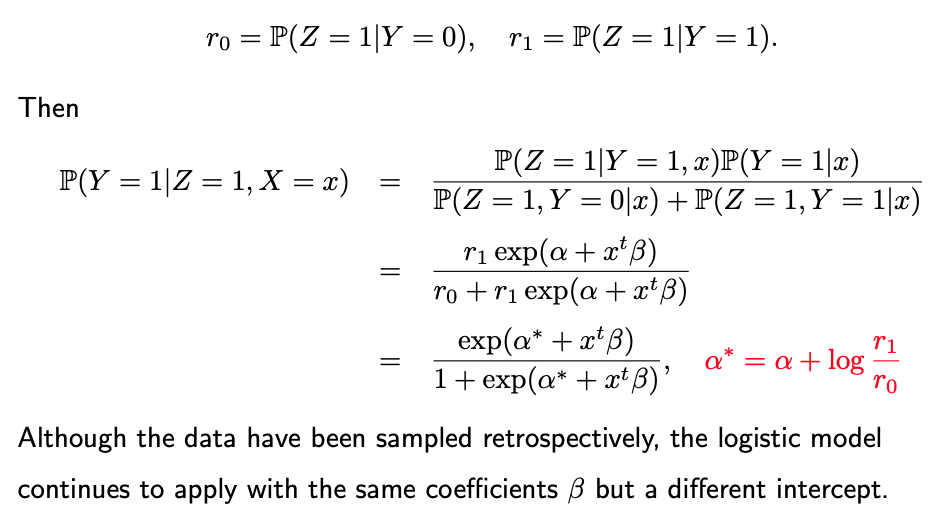

10.5. Retrospective Sampling Data
10.5.1. Multinomial Logistic Regression
In our discussions thus far, our primary focus has centered on binary logistic regression. However, we should note that its extension to multinomial regression, applicable when dealing with more than two possible outcomes, is relatively straightforward. I recommend this as additional reading material for our students.
10.5.2. Nonlinear Logistic Regression
Furthermore, we’ve concentrated predominantly on linear models. It’s worth noting that extending these models to accommodate nonlinearity is not an intricate task. One can achieve this by merely introducing quadratic or cubic terms into the logistic regression framework.
10.5.3. Retrospective Sampling
Now, allow me to address another key issue, one that pertains to retrospective sampling. But what exactly is retrospective sampling? Typically, in machine learning, we assume that our data consists of independently and identically distributed (i.i.d.) samples drawn from a population of interest. However, there are situations where we gather data retrospectively.
To illustrate, consider a study on cancer. Instead of randomly selecting a hundred individuals from the entire population, which would likely result in obtaining all one hundred participants as unknown cancer patients, we must select a significantly larger sample, possibly in the thousands or even millions.
This method of sampling is highly inefficient. An alternative approach is to select a hundred patients but ensure that they comprise a balanced representation. In this case, we might draw 50 samples from a group of cancer patients and 50 from a control group, representing individuals without cancer. Consequently, our training dataset comprises 50 samples from each category.
However, when we assess our model’s performance on a test sample, we wish to apply it to the broader population, essentially hoping to predict outcomes for ordinary individuals.
10.5.4. The Challenge
The challenge here arises from the inherent differences between the training and testing datasets. In the general population, we would not expect a perfect 50-50 split between cancer patients and non-cancer patients. This discrepancy between training and testing datasets can pose a significant challenge. Machine learning algorithms fundamentally rely on the assumption that training and testing data originate from the same population or follow the same random process.
Introduce an indicator variable, denoted as “Z,” to determine whether an individual has been sampled. Consequently, when analyzing retrospective samples, our obtain an estimate of the probability \(P(Y=1 | Z=1, X=x).\) However, our ultimate goal is to learn the probability \(P(Y=1 | X=x),\) without any reliance on Z.
Fortunately, it is possible to address this discrepancy by using logistic regression.
Assume this desired probability \(P(Y=1 | X=x)\) can be characterized using a logistic regression model:
It’s interesting to note that for logistic regression models, the coefficients estimated from a retrospective sample are almost the same as those obtained from an ordinary random sample except the intercept.
{kind=link}
This suggests that despite the differences in sampling methodologies, the fundamental relationships between the features and the outcome (as captured by the coefficients) tend to remain consistent. This finding underscores the robustness of logistic regression in handling retrospective data, with the primary distinction often being the intercept, which can be adjusted to align the model with the characteristics of the broader population.